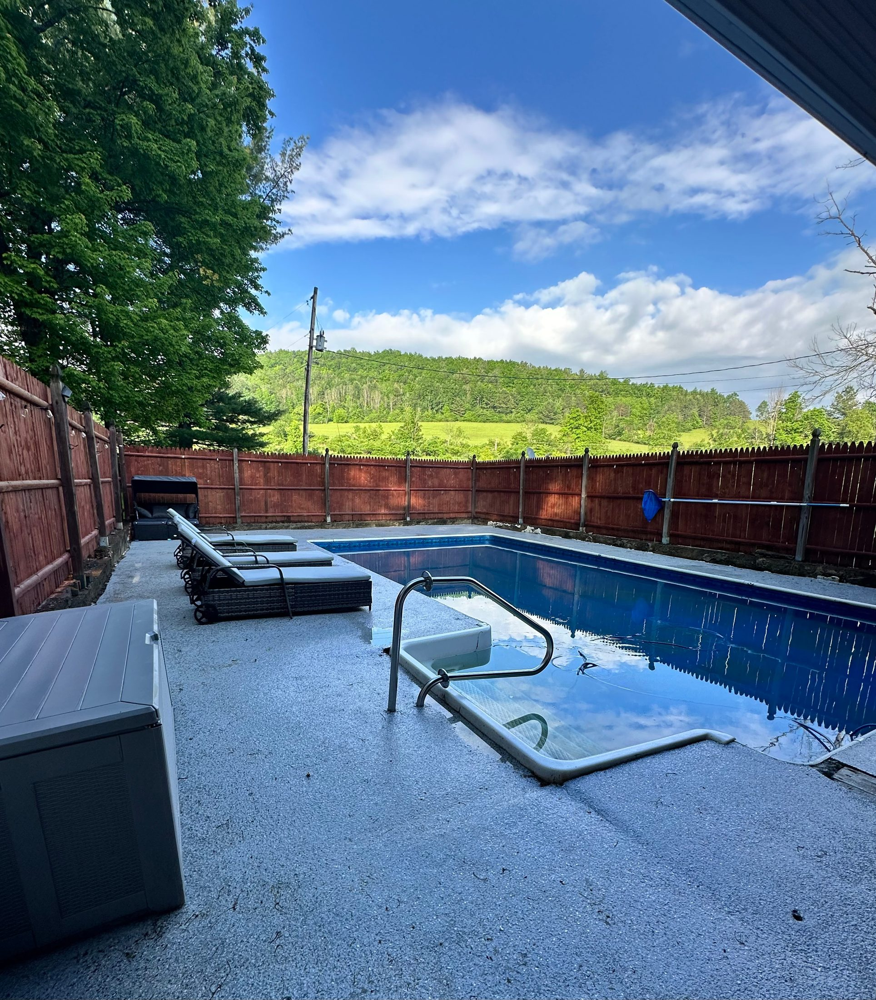
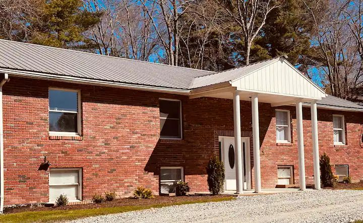
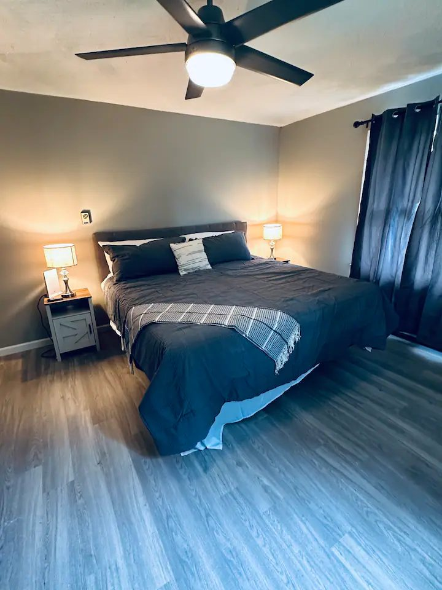
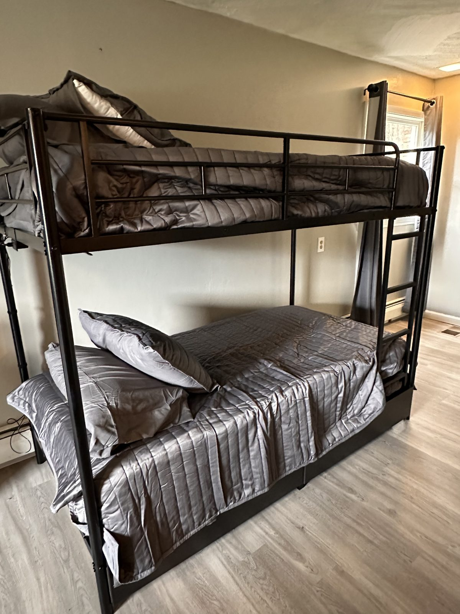

Outdoor living
Seasonal heated pool, large deck, outdoor dining, propane griddle, fire pit, shaded yard, and space for yard games.

Lower Finger Lakes Region · Lawrenceville, Pennsylvania
A nature-focused retreat on eight acres with wooded space, creek frontage, gentle waterfalls, a seasonal heated pool, fire pit, deck, and easy access to Cowanesque Lake, Corning, Watkins Glen, Wellsboro, and the PA Grand Canyon.
The Retreat
Serenity Woods is for guests who want to be outside: coffee on the deck, afternoons by the pool, quiet walks toward the creek, day trips into the Finger Lakes, and evenings around the fire pit.
The property includes roughly six wooded acres, grassy shaded space near the home, creek frontage along the western side, and a smaller feeder creek along the southern edge.

What guests come for
A polished but practical rental for families, friend groups, couples weekends, fishing trips, race weekends, wine-country exploring, and anyone who wants a quiet home base near the Pennsylvania/New York border.
Seasonal heated pool, large deck, outdoor dining, propane griddle, fire pit, shaded yard, and space for yard games.
Full kitchen, spacious living room, dining area, washer/dryer, air conditioning, ceiling fans, and fast fiber internet.
Wooded acres, creek frontage, gentle waterfalls, nearby lake access, and easy day trips for hikes, museums, wineries, and scenic overlooks.
Sleeping Arrangements
The house sleeps up to 10 guests across three bedrooms, making it flexible for family trips, couples weekends, and small group retreats.

Large primary bedroom with king bed, nightstands, ceiling fan, and updated flooring.

Flexible sleeping space for kids, cousins, or a mixed family/friend group.
Explore Nearby
Stay quiet and tucked away, then drive out for lake days, museums, wineries, waterfall hikes, racing events, restaurants, and scenic overlooks.
About a mile from the property for fishing, boating, swimming, and relaxed lake days.
Dining, shopping, breweries, and the Corning Museum of Glass within an easy drive.
Waterfalls, wineries, race weekends, Seneca Lake drives, and classic Finger Lakes scenery.
Scenic overlooks, trails, biking, foliage, and one of Pennsylvania’s best-known natural attractions.
Pool afternoons, fire pit nights, breweries, wine tours, food runs, and a comfortable place to gather.
Creek exploring, board games, yard space, pool time, lake days, and room for everyone to settle in.
Photos
Beyond the property
Guests can keep it simple with pool days and fire pit nights, or turn the trip into fishing, wine tasting, waterfall hikes, race weekends, and even dark-sky stargazing.
Cowanesque Lake is close by for easy water time, laid-back shore fishing, and summer afternoons outside.
Head north into the Finger Lakes for vineyard views, tastings, and a more grown-up weekend rhythm.
Mix in Watkins Glen hikes, race weekends, or a memorable evening drive to Cherry Springs for dark-sky views.
Book Your Stay
Check current rates, availability, house rules, and reviews through Airbnb or VRBO. The public website gives you the feel of the property; the booking platforms carry the live calendar and official terms.
{kind=link}
{kind=link}
{kind=link}
{kind=link}
{kind=link}
{kind=link}
{kind=link}
{kind=link}